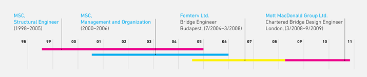
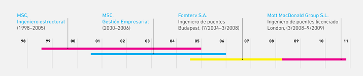
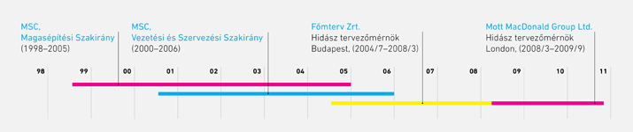

I believe in multi-disciplinary, continuous learning and the strength of the smile...
Current mission:
I am looking for an opportunity where my international experience in engineering together with my interests in infrastructure economics, construction management and my language capabilities will be realised.
great vision ahead...
HU
ESP
- ENG
- ESP
- HU
HU
CV in pdf format
ESP
CV
Download my detailedCV in pdf format
work experience
-
Pudding Mill River Bridges, Crossrail Project, London
Responsible designer for two bridges for the new underground line
2010 -
Boulevard Bridges, Al Raha Beach Development, UAE
Independent design checks of 12 pieces of 80m span arch bridges
2009 -
Belvedere Access Bridge, London
Responsible designer of the bridge in maritime area
2008 -
Construction of the new arch Pentele Bridge over the Danube at Dunaujvaros
Pentele Bridge is a 312m span world record holder arch bridge
Project management task for the load test of the main span2007
Numerical calculation of the transportation of the bridge2006
Mechanical analysis of the arch and the connecting deck part2005
Mott MacDonald Group Limited 2008/3-2010/10
London, UK - Metros & Civil Division, Chartered Bridge Engineer
Quality, Environment and Safety (QES) Management System Representative
Fomterv Ltd. 2004/7–2008/3
Budapest, Hungary - Department of Bridge Engineering, Bridge Designer Engineer
professional status
education
Budapest University of Technology and Economics, Hungary, MSC
Faculty of Civil Engineering, Structural engineer
1998-2005
Corvinus University of Budapest, Hungary, MSC
Faculty of Business Administration, Management and Organization
2000-2006
Cracow University of Technology, Poland, CEEPUS Scholarship
Institute of Computer Methods in Civil Engineering
2001
language capability
English: fluent, Spanish: competent, Hungarian: mother tongue
- ENG
- ESP
- HU
HU
ESP
Behind the CV

I was about ten: "my son, study! Even if we only eat bread and water… but you study as much as you can..."
It's one year before the millennium. As a structural engineer student, I am a member of a research group. Fellowships are great, projects are amazing, however I decide that in parallel with the Technical University I am going do the most popular full time management courses in Hungary as well. So I add one more year to each department. It is not a big deal; My intuition tells me, that I will need this experience...
Jump a couple of years ahead. I am an appreciated member of an outstanding consultancy company in Hungary, I am designing an underground station and world record holding bridge. For a young professional these unbelievable tasks give me the self-esteem and drive to challenge myself in international market. Therefore I move to England, and I start everything from the beginning in a foreign place, in a new environment.
I have been working in London for two and a half years. I gain experience from significant international projects in the head office of an engineering consultancy company, where I have a secure place in the face of the financial crisis. Around me many people hardly understand what moves me when I resign and take a new direction.
great vision ahead...
- ENG
- ESP
- HU
HU
The pictures and videos were used with the permission of the following companies:
Főmterv Ltd (Hungary), HSP Hídépítő Speciál Ltd (Hungary), Mott Macdonald Group Ltd (UK).
ESP
References
{kind=link}
{kind=link}
{kind=link}
{kind=link}
{kind=link}
{kind=link}
{kind=link}
{kind=link}
{kind=link}
{kind=link}
{kind=link}
{kind=link}
{kind=link}
{kind=link}
The pictures and videos were used with the permission of the following companies:
Főmterv Ltd (Hungary), HSP Hídépítő Speciál Ltd (Hungary), Mott Macdonald Group Ltd (UK).
- ENG
- ESP
- HU
HU
ESP
Contact
Attila Fustos
- Phone: +521.551.359.29.16 (currently in Mexico)
- Email: attila@fustos.com
-
Linked-In profil
 with recommendations
with recommendations
- Outlook v-Card
- ENG
- ESP
- HU
ENG
HU
Creo en la multidisciplinariedad, continuo aprendizaje y el poder de una sonrisa...
Misión actual:
Busco una oportunidad, donde mi experiencia y mis habilidades internacionales en ingeniería, economía de infraestructura y administración en construcción sea apreciado. Tengo interés especial de trabajar en el área de habla hispana. buscando desafío...
- ENG
- ESP
- HU
ENG
detallado en PDF
HU
CV
Descargar mi CVdetallado en PDF
experiencia profesional
-
Puentes del Río Pudding Mill, Proyecto Crossrail (Metro nuevo), Londres
Responsable del diseño de dos puentes para la línea nueva de metro
2010 -
Puentes de Boulevard, Al Desarrollo de Raha Beach, Emiratos Árabes Unidos
Revisión del diseño de 12 partes de 80m de envergadura para un Puente de arco
2009 -
Puente de acceso en Belvedere, Londres
Responsable del diseño del puente en el Área marítima
2008 -
Construcción de la Linea de Metro No. 4, Budapest 2007
Responsable del diseño de las estaciones para la nueva línea de metro
-
Puente Pentele sobre el río Danubio en la ciudad de Dunaujvaros
El mismo tiene 312m de envergadura, record mundial en su categoría
Responsable del control de la prueba de carga del puente2007
Análisis del transporte de la envergadura de la estructura principal2006
Análisis de la conexión entre los arcos y tablero del puente2005
Mott MacDonald Grupo S.L. 2008/3-2010/10
Londres, Reino Unido - Oficina de Puentes, Ingeniero de puentes licenciado
Responsabilidad extendida: Sistema de Calidad, de Protección del Medio Ambiente y de seguridad
Fomterv S.A. 2004/7–2008/3
Budapest, Hungría - División de Ingeniería de Puentes, Ingeniero de puentes
estado profesional
formación
Universidad Politécnica de Budapest, MSC (Master en Ciencias)
Departamento de Ingeniería Civil, Ingeniero estructural
1998-2005
Universidad de Ciencias Económicas Corvinus de Budapest, MSC
Facultad de Administración de Negocios, Gestión Empresarial
2000-2006
Universidad Politécnica de Cracovia, Polonia, CEEPUS beca
Instituto de Métodos de Computación en Ingeniería Civil
2001
idiomas
Ingles: fluido, Español: nivel competente, Húngaro: lengua materna
- ENG
- ESP
- HU
ENG
HU
Detrás de CV

Fue con diez años: "hijo mio, estudia! Aunque tengamos que comer pan duro, durante mucho tiempo pero lo más importante es que tu estudies"
Estamos un año después de milenio. Como un estudiante ingeniero estructural, soy un miembro del grupo investigación. Es un grupo muy grande y los proyectos son interesantes. En paralelo con Universidad Politécnica determino que me matriculo en la Universidad de Ciencias Económicas en el más famoso curso de administración de negocios de Hungría. Estos cursos me sirven para tener mas experiencias, las cuales me servirán algún día.
Vamos a saltar un par de años adelante… Soy un miembro estimado de una de las firmas más prestigiosas de Hungría, actualmente estoy diseñando estación de metro y participo en el proyecto de un puente de récord mundial. Para un profesional joven estas tareas increíbles me dan autoestima y buscar nuevo reto en área internacional. Luego decido cambiar de aires y me voy a Inglaterra y vuelvo a empezar en un país extranjero, en un ambiente nuevo.
He estado trabajando en Londres por dos anos y medio . Adquiero experiencia de proyectos significativos internacionales en el oficina central proyectos de diseño multinacionales, donde tengo un puesto seguro a pesar de la crisis financiera. La gente que esta cerca de mi no entiende que me guste descubrir nuevas metas, cuando renuncio y encaro un nuevo reto.
visión empresarial...
- ENG
- ESP
- HU
ENG
Las fotos y los vídeos fueron utilizados con el permiso de las siguientes empresas:
Főmterv S.A. (Hungría), HSP Hídépítő Speciál S.A. (Hungría), Mott Macdonald Group S.L. (Reino Unido).
HU
Referencias
Las fotos y los vídeos fueron utilizados con el permiso de las siguientes empresas:
Főmterv S.A. (Hungría), HSP Hídépítő Speciál S.A. (Hungría), Mott Macdonald Group S.L. (Reino Unido).
- ENG
- ESP
- HU
ENG
HU
Contacto
Attila Fustos
- Teléfono: +521.551.359.29.16 (ahora en México)
- Email: attila@fustos.com
-
Perfil en Linked-In:
con referencias
- Outlook v-Card
- ENG
- ESP
- HU
ESP
ENG
Amiben hiszek az a többirányúság, a folyamatos tanulás és a mosoly ereje...
Jelenlegi célok:
Olyan lehetőséget keresek, ahol a mérnökként szerzett nemzetközi tapasztalataimat, az infrastrukturális beruházások, az építési menedzsment iránti érdeklődésemet és a nyelvtudásomat egyszerre tudom kamatoztatni.
kihívást keresve...
- ENG
- ESP
- HU
ESP
letöltése PDF formátumban
ENG
Önéletrajz
Részletes önéletrajzletöltése PDF formátumban
szakmai tapasztalat
-
Crossrail project, az új kelet-nyugati metróvonal tervezése Londonban
Két híd újjáépítésének tervezése London belvárosában
2010 -
Boulevard Ívhidak, Al Raha Beach, Egyesült Arab Emírségek
12 db 80m fesztávú ívhídból álló csoport független ellenőrzése
2009 -
Belvedere ártéri híd,
London Feszített-gerendás héttámaszú folytatólagos híd tervezése
2008
Mott MacDonald Group Limited 2008/3-2010/10
London, Egyesült Királyság - Hídtervező Iroda, Hidász tervezőmérnök
Kiterjesztett felelősségi kör: Minőség, Környezetvédelem és Biztonsági Rendszer (QES)
Főmterv Zrt. 2004/7–2008/3
Budapest - Híd és Szerkezettervező Iroda, Tartószerkezeti és hidász mérnök
kamarai és szervezeti tagságok
Az Angol építőmérnöki Kamara teljesjogú tagja – Institution of Civil Engineers (CEng, MICE)
Magyar Mérnöki Kamara (T-T, Th-T, Ké-T)
iskolai végzettségek
BME, Budapesti Műszaki és Gazdaságtudományi Egyetem, MSC
Építőmérnöki Kar, Okleveles építőmérnök, Magasépítési Szakirány
1998-2005
BCE, Budapesti Corvinus Egyetem, MSC*
Gazdaságtudományi Kar, Okleveles közgazdász, Vezetési és Szervezési Szakirány
2000-2006
Krakkói Műszaki Egyetem, Lengyelország, CEEPUS ösztöndíj
építőmérnöki Alkalmazott Informatika Tanszék
2001
nyelvismeret
Angol: folyékony, Spanyol: társalgási szint
*Az Egyetemi Tanulmányokat befejeztem, a közgazdász oklevelemet a második nyelvvizsga hiányában még nem vehettem át. Ez a megjegyzés az az eltérő szabályozás miatt az idegen nyelvű önéletrajzokon tudatosan nem szerepel.
- ENG
- ESP
- HU
ESP
ENG
A CV mögött

Tíz éves lehettem: "tanulj fiam, előbb eszünk zsíros-kenyeret, minthogy ti ne tanuljatok..."
Egy évvel az ezredforduló előtt építőmérnök hallgatóként diákköri kutatócsoporttal dolgozom. A társaság jó, a feladatok nagyszerűek, mégis, a Műegyetemmel párhuzamosan beiratkozom az ország legismertebb nappali menedzsment kurzusára. Mindkét szakon egy évvel többet töltök az ideálisnál, de nem baj, mert tudom, hogy az itt szerzett tapasztalatok egyszer még hasznomra válnak...
Ugorjunk pár évet az időben. Megbecsült hidász mérnök vagyok az egyik patinás hazai műhelyben, metróállomás és világrekorder híd tervezésén dolgozom. Ezek a feladatok egy életre megadják a mérnöki önbecsülést, és arra ösztönöznek, hogy megméressem magam nemzetközi porondon is, ezért Angliába költözöm, és mindent előröl kezdek egy idegen helyen, új környezetben.
Már két év fél éve dolgozom Londonban. Nemzetközi szinten is jelentős projektekben szerzek tapasztalatokat egy mérnöki tanácsadó cég központjában, ahol a válság ellenére biztos helyem van. Körülöttem sokan nem értik mi vezérel, amikor felmondok és új kihívás elé állítom magam.
mert hiszek valamiben...
- ENG
- ESP
- HU
ESP
A képeket és videorészleteket a következő vállalatok engedélyével használtam fel:
Főmterv zRt., HSP Hídépítő Speciál Kft., Mott Macdonald Group Ltd. (UK).
ENG
Referenciák
A képeket és videorészleteket a következő vállalatok engedélyével használtam fel:
Főmterv zRt., HSP Hídépítő Speciál Kft., Mott Macdonald Group Ltd. (UK).
- ENG
- ESP
- HU
ESP
ENG
Kapcsolat
Füstös Attila
- Telefon: +521.551.359.29.16 (jelenleg Mexikóban)
- Email: attila@fustos.com
-
Linked-In profil
ajánlásokkal
- Outlook v-Card
- ENG
- ESP
- HU